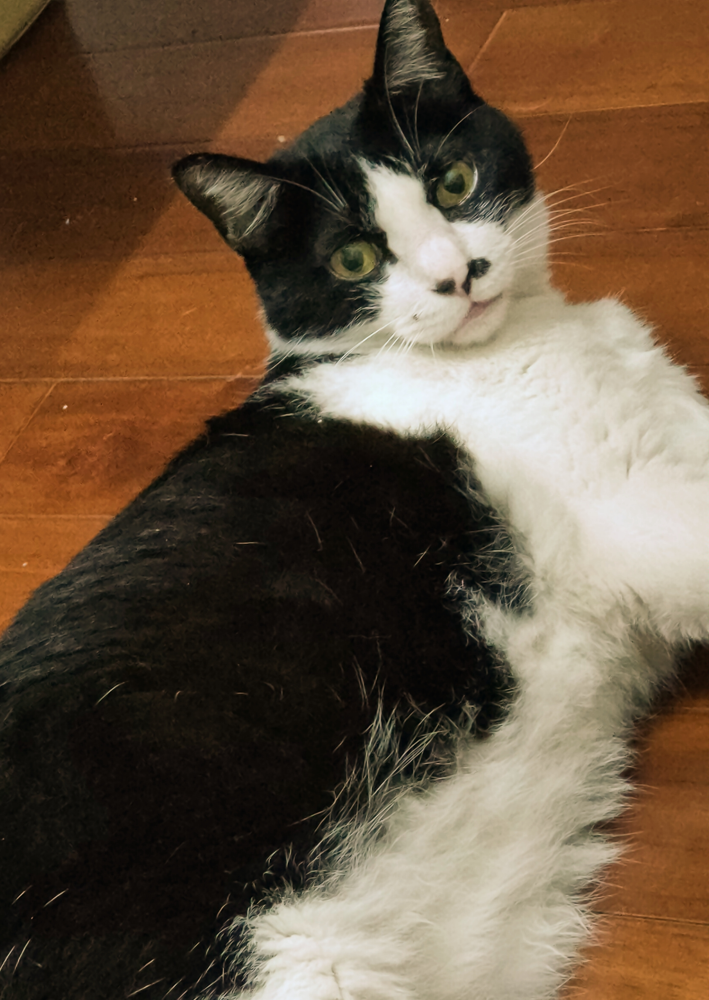

製作團隊
- 
-
姓名:陳又愷 擅長word、excel、ppt、wind等軟體的安裝與 解除安裝；精通PE、PS、PB、DCF、PEG等單詞 的拼寫；熟悉Windows、Linux、Mac、Android 、IOS、WP8等系統的開關機。 -
姓名:Mimi 擅長吃喝拉撒睡、破壞家具、在半夜鬼吼鬼叫
研究動機
珊瑚是珊瑚綱中多類生物的統稱，身體呈圓筒狀，有八個或八個以上的觸手，觸手中央有口。主要棲息於熱帶、亞熱帶海域，在陽光充足、水質清澈的淺海區形成。溫度是影響造礁珊瑚生長的限制性因素，海水年平均溫度不低於20℃，珊瑚蟲才能造礁，其最適宜的溫度範圍是22℃～28℃。雖然珊瑚礁的總面積僅占海洋總面積0.27，約60萬平方千米，但卻也孕育出數萬種蝦、螺、蟹、貝和海星等及多達2500種的海洋魚類。
最早在1998年因聖嬰現象，全球發生第一次珊瑚大白化，台灣的東沙環礁也發生白化，部分珊瑚至今還無法恢復到原本狀態；而全世界最大的珊瑚礁群澳洲大堡礁，分別在2016、2017及2020年，在短短五年間發生3次珊瑚白化現象，不管是規模或嚴重性都創下有史以來的紀錄。同時，在2020年台灣首次夏季沒有颱風登陸，海水沒有機會受到擾動情況下，紀錄到水溫是最高的一年，使得全島從南到北發生了幾十年來最大規模的珊瑚白化現象，最嚴重的海域有55%的珊瑚因此死亡。
珊瑚對於海洋環境是不可或缺的，我認為珊瑚保育應該受到社會的重視。